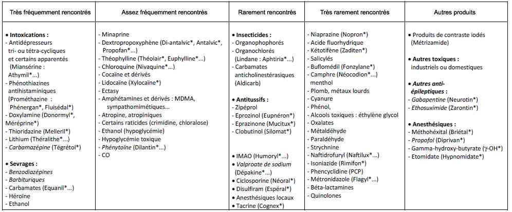

Bienvenue Sur Medical Education
Convulsions de l'adulte
Spécialité : neurologie / symptômes /
Points importants
-
Tableau fréquent avec 2 cadres cliniques : crise inaugurale ou crise chez un épileptique connu (recherche d'un sous dosage en anti-épileptiques : AE)
-
Différencier une crise convulsive d'emblée généralisée d'une crise à point de départ partiel (de valeur localisatrice)
-
Gravité de la convulsion généralisée avec évolution toujours possible vers un état de mal épileptique (EME)
-
Recherche systématique d'une hypoglycémie
-
Penser à l'intoxication au CO, notamment chez l'enfant (convulsions fréquentes)
-
Importance de l'anamnèse et de l'examen clinique complet
-
Recherche systématique de complications :
-
traumatisme crânien
-
luxation postérieure de l'épaule
-
fractures diverses et contusions viscérales
-
rhabdomyolyse
-
insuffisance rénale
Présentation clinique / CIMU
- traumatisme crânien
- luxation postérieure de l'épaule
- fractures diverses et contusions viscérales
- rhabdomyolyse
-
insuffisance rénale
Présentation clinique / CIMU
Le diagnostic repose souvent sur l'interrogatoire du malade et surtout des éventuels témoins
SIGNES FONCTIONNELS
-
Généraux :
- fièvre, céphalées, myalgies
- encombrement bronchique
- Signes de localisation neurologique
- Syndrome méningé
- Dyspnée (pneumopathie d'inhalation)
- Difficultés de mobilisation de l'épaule révélant une luxation postérieure de l'épaule (abolition de la rotation externe active et passive)
- Morsure de langue (ou de la face interne de joue), perte d'urines
CONTEXTE
ATCD
- Epilepsie préexistante
- lésions structurelles du système nerveux central
Traitement
- Recherche d'un sevrage relatif ou absolu en AE (interaction médicamenteuse) ou en sédatifs
- Prise de substances ou médicaments abaissant le seuil épileptogène
- Modification récente des posologies des AE en cas d'épilepsie préexistante
- Introduction d'un nouveau médicament
Facteurs favorisants
- Privation de sommeil
-
Prise de substances ou de médicaments abaissant le seuil épileptogène
-  _253 Tableau Principales causes toxiques de coma convulsif ou de convulsions
- Infection intercurrente
- Lumière stroboscopique
-
Chez un patient non épileptique :
- intoxication alcoolique aiguë ou sevrage éthylique (diminution d'une alcoolémie chez un éthylique chronique)
- contexte de voyage récent
- séjour en zone d'endémie palustre
Circonstances de survenue
- Recherche d'un traumatisme crânien
- Lieu et horaire de la crise
EXAMEN CLINIQUE
- A l'interrogatoire des témoins, rechercher la localisation des symptômes initiaux le cas échéant
-
Examen somatique complet :
- perte d'urines
- morsure de langue ou de face interne de joue
- auscultation cardio-pulmonaire
-
Examen neurologique exhaustif :
- recherche d'automatismes divers, moteurs ou verbaux
- de signes déficitaires focaux persistants après la crise
- de signes méningés
-
Recherche des différentes phases d'une crise tonico-clonique généralisée :
- début brutal en pleine conscience (parfois après un cri), avec chute traumatisante et perte de connaissance immédiate
- phase tonique (10 à 20 secondes) = contraction tonique des muscles axiaux, en flexion puis en extension, morsure caractéristique des bords latéraux de langue ou joue
- phase clonique (30 à 40 secondes) = secousses rythmiques de l'ensemble du corps
- phase stertoreuse ou résolutive (quelques minutes) = relâchement musculaire complet (coma calme hypotonique), perte d'urines, chute de la langue en arrière avec stertor (attention à la liberté des voies aériennes) ; syndrome tétrapyramidal avec signe de Babinski bilatéral et mydriase bilatérale réactive pouvant persister plusieurs heures
- reprise progressive de la conscience avec phase de confusion et d'amnésie post critique
EXAMENS PARACLINIQUES SIMPLE
- Glycémie capillaire +++ (recherche d'une hypoglycémie)
- SpO2
-
ECG
Signes paracliniques
-
Adaptés aux éléments d'orientation, ils ne doivent pas retarder le traitement de la convulsion. Ils sont centrés sur la recherche de conséquences des convulsions et de causes nécessitant un traitement urgent
BIOLOGIQUES
-
Bilan métabolique systématique (hyperglycémie secondaire ou hypoglycémie, ionogramme sanguin, calcémie, phosphorémie, magnésémie, urée et créatinine sanguines ; insuffisance rénale fonctionnelle [tubulopathie] et dyskaliémie)
-
Bilan hépatique selon contexte (éthylisme)
-
Lactates sanguins (acidose métabolique)
-
Gaz du sang : acidose hypercapnique, hypoxie
-
Bilan toxicologique (alcoolémie, recherche de toxiques potentiellement épileptogènes, dosage quantitatif des AE)
-
Dosage des CPK (rhabdomyolyse)
-
HbCO (selon contexte)
-
Bêta-HCG sériques (selon contexte : risque fotal et iatrogénique)
IMAGERIE
Radiographies thoraciques et des lésions secondaires aux convulsions sont systématiques
Imagerie cérébrale sans et avec injection selon le contexte, à la recherche d'un processus expansif intra-crânien, de lésions traumatiques et/ou d'une HTIC, d'une thrombophlébite cérébrale ou d'un AVC ; elle est d'indication large :
-
TDM cérébrale systématique en cas de :
- crise inaugurale et très large en cas d'EME
- traumatisme crânien ou un acte neurochirurgical
- HTIC
- syndrome méningé
- signes focaux cliniques ou électro-encéphalographiques ou crise à début focal
- persistance de manifestations épileptiques
- céphalées persistantes
- phase postcritique prolongée
- en cas d'épilepsie connue, si la symptomatologie des crises est modifiée
- terrain particulier : traitement anticoagulant, cancer, SIDA
- IRM cérébrale : si le scanner est normal, chez l'adulte jeune et en cas de crise partielle ou de signes focaux
EEG
- De tracé souvent modifié au décours de la crise, recherchant des éléments de type épileptique (pointes brèves et amples à début et fin brusques, souvent associées à des ondes plus lentes : complexe pointe-onde)
- Son caractère normal (en postcritique) n'élimine pas la comitialité
- Son apport est surtout primordial dans le diagnostic positif ou différentiel et l'orientation étiologique de l'EME, mais est rarement disponible en urgence
- En cas de troubles de la vigilance prolongés > 6 H : réalisation d'un EEG à la recherche d'un EME non convulsif
PONCTION LOMBAIRE
- Surtout en présence de convulsions fébriles sans HTIC
- Souvent réalisée après le scanner mais ne devant pas retarder les traitements anticonvulsivant ni antibiotique d'une éventuelle méningo-encéphalite
- Recherche de PCR HSV 1 et 2
- En règle normale mais une pléiocytose modérée du LCR (5-30 cellules /mm3) et une discrète hyperprotéinorachie (< 1 g/L) peuvent exister en dehors de tout traumatisme ou de toute infection (EME)
CIMU
- Tri 1 à 3 selon la gravité
Diagnostic étiologique
La comitialité chez l'adulte peut être classiquement d'origine
- Vasculaire, en moyenne 2 ans après un AVC hémorragique ou ischémique (surtout si déficit persistant ou atteinte corticale)
- Tumorale dans 5 % des crises (25 % de crises partielles)
- Traumatique, après un délai moyen de 3 ans, en cas d'hémorragie ou de contusion cérébrale, de plaie crânio-cérébrale ou de séquelle neurologique durable, ou en cas de coma post-traumatique de plus de 24 heures avec crises précoces
- Ethylique, sur ivresse aiguë, sevrage (delirium tremens et pré-delirium) ou imprégnation chronique
- "Primaire" ou idiopathique, souvent sous forme de crises partielles chez le sujet âgé et généralisées chez le sujet jeune => recherche d'éventuels antécédents familiaux
Causes principales chez l'adulte jeune
- Toxiques (cocaïne, amphétamines...) et éthyliques
- Traumatiques, idiopathiques, infectieuses ou sur processus intracrânien
Causes principales chez le sujet âgé
- Causes vasculaires (+)
- Traumatiques
- Toxiques
- Métaboliques
- Tumorales (+) ou dégénératives (démences)
Diagnostic différentiel
-
Malaises avec perte de connaissance : syncopes, parfois itératives et associées à des mouvements convulsifs, témoin de troubles conductifs ou rythmiques (ECG)
-
Malaises d'origine psychiatrique : crises d'angoisse et manifestations hystériques
-
Crises toniques postérieures accompagnant un engagement cérébral ou une anoxie aiguë, avec hypertonie axiale, tremblements des membres pseudo-cloniques, hyperpnée et sueurs
-
Myoclonies, astérixis, tremblements, mouvement choréique, dystonies, dyskinésies, tics, hémiballisme
-
Autres causes de coma
Traitement
TRAITEMENT PREHOSPITALIER / INTRAHOSPITALIER
-
Si contexte infectieux avec coma ou signes de localisation : antibiotiques d'emblée puis TDM puis PL
Traitement
TRAITEMENT PREHOSPITALIER / INTRAHOSPITALIER
- Si contexte infectieux avec coma ou signes de localisation : antibiotiques d'emblée puis TDM puis PL
Stabilisation et traitement initiaux
-
Prévention des traumatismes :
- mise en position latérale de sécurité
- pas de contention forcée
- protéger le patient
- amortir la chute (oreillers, couvertures)
-
Maintien de la liberté des voies aériennes :
- ablation des prothèses dentaires
- subluxation antérieure de la mandibule
- aspiration pharyngée, mise en place d'une canule de Guedel
- oxygénothérapie systématique pour SpO2 ≥ 95% et PaO2 ≥ 80 mmHg
- Pose d'accès veineux de bon calibre (12 à 14 Gauge), bien fixés (mouvements cloniques)
- Perfusion par NaCl 0,9%, sauf si crise convulsive liée à une hypoglycémie
- Perfusion systématique de 100 mg B1 chez l'éthylique
-
Si la crise n'est pas terminée, administration de benzodiazépines :
- diazépam (Valium®) 0,1 mg/kg soit 1 ampoule de 10 mg en IVD lent (2 mg/min) ou 0,5 mg/kg en intrarectal chez l'enfant (voire chez l'adulte si absence de voie veineuse), renouvelable après 10 minutes
- clonazépam (Rivotril®) 1 ampoule de 1 mg en IVL (sur 2 à 3 min) ; chez l'enfant : 0,02 à 0,05 mg/kg en 3 min IV ou 0,1 mg/kg intrarectal
- Une injection intramusculaire est parfois réalisée, notamment au décours immédiat de la crise pour prévenir les récidives, mais la résorption par cette voie reste très aléatoire ; la voie sublinguale peut être utile chez l'enfant
- En cas d'inefficacité sur les convulsions => une 2e ampoule de benzodiazépines sera administrée 5 à 10 min plus tard
- En cas d'échec, risque d'évolution vers des crises sérielles (avec récupération de la conscience entre les crises) ou vers l'EME
Traitement étiologique
- Administration de glucosé hypertonique en cas d'hypoglycémie, correction des troubles métaboliques, anti-infectieux d'une méningo-encéphalite, neurochirurgie d'une tumeur, antiagrégant dans l'AVC...
- Terrain épileptique connu suivant régulièrement son traitement : après s'être assuré de l'authenticité des crises, corriger un facteur déclenchant et/ou traiter une cause organique sous-jacente, rééquilibrer le traitement en cas de thérapeutique inadaptée
- Traitement des complications
Suivi du traitement
- Le traitement par benzodiazépines à demi-vie courte est le traitement de la crise en urgence
-
Le traitement de la crise peut également nécessiter un recours à un AE d'entretien, à demi-vie longue (traitement de fond) tel que :
- phénobarbital (Gardénal®)
- valproate de sodium (Dépakine®)
- diphényl-hydantoïne (Dihydan®)
- gabapentine (Neurontin®)
- lévétiracétam (Keppra®)
- carbamazépine (Tégrétol®)
- amotrigine (Lamictal®)
- topiramate (Epitomax®)
Surveillance
CLINIQUE
-
Monitorage de la PA, FC, FR, SpO2/h
-
Retour à un état de vigilance normale, avec réponses adaptées
-
Recherche de signes d'inhalation
-
Recherche de complications
PARACLINIQUE
-
Contrôle des paramètres biologiques initialement modifiés
-
Surveillance des effets secondaires médicamenteux
Devenir / orientation
CRITERES D'ADMISSION
-
En réanimation :
-
évolution vers l'état de mal épileptique
-
détresse respiratoire aiguë sur inhalation
-
Aux urgences puis en hospitalisation :
-
toute première crise convulsive inaugurale
CRITERES DE SORTIE
-
Chez un épileptique connu, sans modification de la clinique des crises, avec un facteur déclenchant clairement identifié (rupture thérapeutique...), la sortie peut être envisagée après un délai de surveillance de 4 heures, sous couvert d'un rendez vous dans les 7 jours avec le neurologue et d'un traitement par benzodiazépines
ORDONNANCE DE SORTIE APRES UNE PREMIERE CRISE
-
Traitement par benzodiazépines de type clobazam (Urbanyl®) : 5 mg matin et midi et 10 mg le soir chez l'adulte, et 0,5 à 1 mg/kg/j chez l'enfant, pendant 5 à 7 jours à dose progressivement décroissante, jusqu'à la consultation neurologique
-
Pas de traitement AE de fond d'emblée :
-
si crise contextuelle bénigne et transitoire d'étiologie métabolique, toxique, sevrage
-
s'il existe un doute diagnostique
-
après une première crise généralisée, en l'absence de mise en évidence de foyer à l'imagerie
-
Instaurer une monothérapie AE de fond, à posologie minimale efficace, après une première crise à début partiel, et après avis neurologique :
-
si présence de lésions neurologiques sur l'imagerie (épilepsie séquellaire : ATCD traumatique ou d'AVC)
-
si anomalies de type comitial à l'EEG (foyer épileptogène)
-
parfois en raison d'un risque professionnel (si l'éventuelle récidive présente des conséquences potentiellement graves : accident, perte d'emploi...)
-
Instaurer une monothérapie AE de fond, à posologie minimale efficace, après avis neurologique :
-
si convulsions fébriles répétées
-
chez l'éthylique chronique, en cas de crises fréquentes et de suivi possible (barbituriques)
-
S'assurer de la prise continue et régulière, et, avant l'institution d'un médicament, que les principes d'éducation pourront être suivis
-
L'éducation du patient reste toujours fondamentale (information du risque de récidive et des précautions nécessaires : conduite automobile, facteurs déclenchants et surveillance)
RECOMMANDATIONS DE SORTIE JUSQU'A LA CONSULTATION NEUROLOGIQUE A J7
-
Arrêt de travail
-
Repos, pas de dette de sommeil
-
Pas de médicament épileptogène
-
Pas de conduite ni de sport à risque
-
Eviter l'alcool et les toxiques potentiellement épileptogènes
-
Consultation neurologique à distance
Mécanisme / description
-
La crise épileptique correspond à un foyer d'excitation (décharges électriques paroxystiques et répétées) par activation subite, simultanée et intense d'un grand nombre de neurones cérébraux
-
Elle est le plus souvent responsable de convulsions, contractions involontaires d'un ou plusieurs groupes musculaires, avec mouvements localisés ou généralisés à tout le corps
-
Leur aspect clinique varie de l'absence (type petit mal) à la convulsion généralisée (avec perte de conscience type grand mal), parfois secondaire à une crise partielle (ou focale type Bravais-Jacksonienne)
-
Les mécanismes impliqués dans le déclenchement d'une épilepsie sont complexes ; l'épileptogenèse fait intervenir un déséquilibre entre systèmes excitateurs et systèmes inhibiteurs synaptiques, des facteurs extra-synaptiques d'altération de l'homéostasie cérébrale (modification des concentrations ioniques extracellulaires) et une modification des réseaux neuronaux
Bibliographie
-
Outin H, Blanc T, Vinatier I, et le groupe d'experts. Prise en charge en situation d'urgence et en réanimation des états de mal épileptiques de l'adulte et de l'enfant (nouveau-né exclu). Recommandations formalisées d'experts sous l'égide de la Société de Réanimation de Langue Française. Réanimation. 2009 ; 18 : 4-12
-
Costello DJ, Cole AJ. Treatment of acute seizures and status epilepticus. J Intensive Care Med. 2007 ; 22 : 319-47
Devenir / orientation
CRITERES D'ADMISSION
-
En réanimation :
- évolution vers l'état de mal épileptique
- détresse respiratoire aiguë sur inhalation
-
Aux urgences puis en hospitalisation :
- toute première crise convulsive inaugurale
CRITERES DE SORTIE
- Chez un épileptique connu, sans modification de la clinique des crises, avec un facteur déclenchant clairement identifié (rupture thérapeutique...), la sortie peut être envisagée après un délai de surveillance de 4 heures, sous couvert d'un rendez vous dans les 7 jours avec le neurologue et d'un traitement par benzodiazépines
ORDONNANCE DE SORTIE APRES UNE PREMIERE CRISE
- Traitement par benzodiazépines de type clobazam (Urbanyl®) : 5 mg matin et midi et 10 mg le soir chez l'adulte, et 0,5 à 1 mg/kg/j chez l'enfant, pendant 5 à 7 jours à dose progressivement décroissante, jusqu'à la consultation neurologique
-
Pas de traitement AE de fond d'emblée :
- si crise contextuelle bénigne et transitoire d'étiologie métabolique, toxique, sevrage
- s'il existe un doute diagnostique
- après une première crise généralisée, en l'absence de mise en évidence de foyer à l'imagerie
-
Instaurer une monothérapie AE de fond, à posologie minimale efficace, après une première crise à début partiel, et après avis neurologique :
- si présence de lésions neurologiques sur l'imagerie (épilepsie séquellaire : ATCD traumatique ou d'AVC)
- si anomalies de type comitial à l'EEG (foyer épileptogène)
- parfois en raison d'un risque professionnel (si l'éventuelle récidive présente des conséquences potentiellement graves : accident, perte d'emploi...)
-
Instaurer une monothérapie AE de fond, à posologie minimale efficace, après avis neurologique :
- si convulsions fébriles répétées
- chez l'éthylique chronique, en cas de crises fréquentes et de suivi possible (barbituriques)
- S'assurer de la prise continue et régulière, et, avant l'institution d'un médicament, que les principes d'éducation pourront être suivis
- L'éducation du patient reste toujours fondamentale (information du risque de récidive et des précautions nécessaires : conduite automobile, facteurs déclenchants et surveillance)
RECOMMANDATIONS DE SORTIE JUSQU'A LA CONSULTATION NEUROLOGIQUE A J7
- Arrêt de travail
- Repos, pas de dette de sommeil
- Pas de médicament épileptogène
- Pas de conduite ni de sport à risque
- Eviter l'alcool et les toxiques potentiellement épileptogènes
- Consultation neurologique à distance
Mécanisme / description
-
La crise épileptique correspond à un foyer d'excitation (décharges électriques paroxystiques et répétées) par activation subite, simultanée et intense d'un grand nombre de neurones cérébraux
-
Elle est le plus souvent responsable de convulsions, contractions involontaires d'un ou plusieurs groupes musculaires, avec mouvements localisés ou généralisés à tout le corps
-
Leur aspect clinique varie de l'absence (type petit mal) à la convulsion généralisée (avec perte de conscience type grand mal), parfois secondaire à une crise partielle (ou focale type Bravais-Jacksonienne)
-
Les mécanismes impliqués dans le déclenchement d'une épilepsie sont complexes ; l'épileptogenèse fait intervenir un déséquilibre entre systèmes excitateurs et systèmes inhibiteurs synaptiques, des facteurs extra-synaptiques d'altération de l'homéostasie cérébrale (modification des concentrations ioniques extracellulaires) et une modification des réseaux neuronaux
Bibliographie
-
Outin H, Blanc T, Vinatier I, et le groupe d'experts. Prise en charge en situation d'urgence et en réanimation des états de mal épileptiques de l'adulte et de l'enfant (nouveau-né exclu). Recommandations formalisées d'experts sous l'égide de la Société de Réanimation de Langue Française. Réanimation. 2009 ; 18 : 4-12
-
Costello DJ, Cole AJ. Treatment of acute seizures and status epilepticus. J Intensive Care Med. 2007 ; 22 : 319-47
Bibliographie
- Outin H, Blanc T, Vinatier I, et le groupe d'experts. Prise en charge en situation d'urgence et en réanimation des états de mal épileptiques de l'adulte et de l'enfant (nouveau-né exclu). Recommandations formalisées d'experts sous l'égide de la Société de Réanimation de Langue Française. Réanimation. 2009 ; 18 : 4-12
- Costello DJ, Cole AJ. Treatment of acute seizures and status epilepticus. J Intensive Care Med. 2007 ; 22 : 319-47
Auteur(s) : Isabelle MALISSIN, Nicolas DEYE